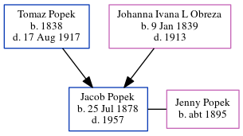

Jacob Popek 1878 - 1957
[ Home ] | [ Calendar ] | [ Surnames Index ] | [ Census Index ] | [ Family History ]The 7th of 9 children of Tomaz Popek and Johanna Ivana L Obreza, Jacob Popek, the first cousin five-times-removed on the mother's side of Michele Copp (née Phillips), was born in Yugoslavia on Jul 25, 1878. He and was married to Jenny Popek. In 1950, he was living in Will, Illinois, USA1.
He died in 1957.
Parents
- Tomaz was born in 1838
- Johanna Ivana L. was born on Jan 9, 1839
Citations
- 1950 United States Federal Census Ancestry.com Operations, Inc. (Department of Commerce. Bureau of the Census. 1913-1/1/1972. Population Schedules for the 1950 Census, 1950 - 1950. Washington, DC: National Archives at Washington, DC. Population Schedules for the 1950 Census, 1950 - 1950. NAID: 43290879. Records of the Bureau of the Census, 1790 - 2007, Record Group 29. National Archives at Washington, DC., Washington, DC.)
Family Tree
Generated by ged2site. Last updated on Jun 6, 2024